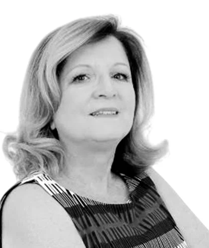

Defesa criminal
e Tribunal
do Júri
em Indaiatuba.
Mara Regina Bueno Kinoshita, advogada, OAB/SP 86.356. Há 21 anos na defesa em processos penais e no plenário do Júri. Atendimento com hora marcada, no Centro.
Quem procura uma advogada criminalista quase nunca está num dia comum. Às vezes é a própria pessoa; muitas vezes é a família, à noite, sem saber o que vem depois. O primeiro trabalho é explicar com calma o que está acontecendo, o que a lei prevê em cada fase e o que precisa ser feito agora.
Atendimento feito pela própria Dra. Mara, do primeiro contato ao fim do processo.
Onde atua
A maior parte do trabalho é penal. As demais áreas aparecem quando o caso da família pede.
- Direito criminalDo inquérito na delegacia à sentença e aos recursos, com acompanhamento em audiência de custódia.
- Tribunal do JúriDefesa em crimes dolosos contra a vida, da primeira fase até os debates no plenário.
- Violência contra a mulherLei Maria da Penha, medidas protetivas e acompanhamento da vítima no processo.
- Infância e juventudeDefesa do adolescente em procedimento de ato infracional e orientação à família.
- Família e sucessõesSeparação, guarda, pensão, inventário e partilha.
- Cível e consumidorContratos, indenizações, cobranças indevidas e cláusulas abusivas.
O caminho de um
processo no Júri
Crimes dolosos contra a vida são julgados por cidadãos da comarca. Entender cada fase ajuda a família a saber o que esperar.


-
Fase 1
Inquérito policial
A investigação começa na delegacia. A defesa acompanha depoimentos, pede acesso aos autos e, se houver prisão, atua na audiência de custódia, que deve acontecer em até 24 horas.
-
Fase 2
Denúncia e resposta
Se o Ministério Público oferece a denúncia e o juiz a recebe, a defesa tem 10 dias para responder por escrito, apontar o que for preciso e indicar testemunhas.
-
Fase 3
Instrução e pronúncia
Testemunhas, vítima e acusado são ouvidos diante do juiz. Ao final, ele decide se o caso vai ou não a julgamento popular.
-
Fase 4
Plenário do Júri
Sete jurados, sorteados da lista da comarca, ouvem acusação e defesa e respondem aos quesitos em votação secreta, numa sala especial.
Cada jurado recebe cédulas de papel opaco com as palavras “sim” e “não” (art. 486 do CPP).

Mara Regina
Bueno Kinoshita
Advogada, OAB/SP 86.356
São 21 anos de defesa técnica em processos penais e de atuação no plenário do Júri. O atendimento é exclusivo e com hora marcada: quem chega ao escritório conversa com ela, e é ela quem acompanha o caso.
Pós-graduada em Direito Penal e Processual Penal, atua também nas questões de família e cíveis que costumam vir junto de um processo criminal.
- Graduação
- Direito, FMU
- Pós-graduação
- Direito Penal e Processual Penal, Escola Paulista de Direito
- Experiência
- 21 anos em defesa penal e plenário do Júri
- Atendimento
- Presencial, com hora marcada

Como funciona
o atendimento
- Primeiro contatoPelo WhatsApp ou pelo telefone. Basta contar em poucas palavras o que aconteceu.
- Conversa com hora marcadaNo escritório da Rua Tuiuti, com a Dra. Mara, em sigilo.
- Leitura do casoAnálise do inquérito, do processo e dos documentos que você trouxer.
- Defesa em cada faseDa delegacia aos tribunais, com retorno sobre cada etapa.
O que levar à primeira conversa
- Documento com foto e CPF
- Intimação, mandado ou boletim de ocorrência que tiver recebido
- Número do inquérito ou do processo, se souber
- Nomes e contatos de quem presenciou os fatos
- Anotações com as datas, na ordem em que tudo aconteceu
Se não tiver nada disso em mãos, entre em contato mesmo assim.
No Centro
de Indaiatuba
Rua Tuiuti, 504Centro, Indaiatuba/SPVer como chegar
(19) 99842-0099
Perguntas
frequentes
Fui chamado para depor na delegacia. Preciso ir com advogado?
A pessoa pode ir sozinha, mas tem direito de ser acompanhada por advogado e de permanecer em silêncio. Vale conversar antes para entender em que condição foi chamada: testemunha, vítima ou investigada.
O que é a audiência de custódia?
É a apresentação da pessoa presa a um juiz, em até 24 horas, para verificar se a prisão foi legal e decidir se ela continua ou se dá lugar à liberdade provisória ou a outra medida.
Um familiar pode procurar o escritório?
Pode. Muitas vezes é a família quem faz o primeiro contato. A conversa já orienta sobre o que fazer nas primeiras horas e quais documentos separar.
Como funciona o julgamento pelo Tribunal do Júri?
Há duas fases. Na primeira, o juiz ouve as provas e decide se o caso vai a plenário. Na segunda, sete jurados ouvem acusação e defesa e votam em sigilo. As fases estão explicadas acima, em “O caminho de um processo no Júri”.
O que eu contar fica em sigilo?
Sim. O sigilo profissional é um dever do advogado, previsto no Estatuto da Advocacia e no Código de Ética da OAB.